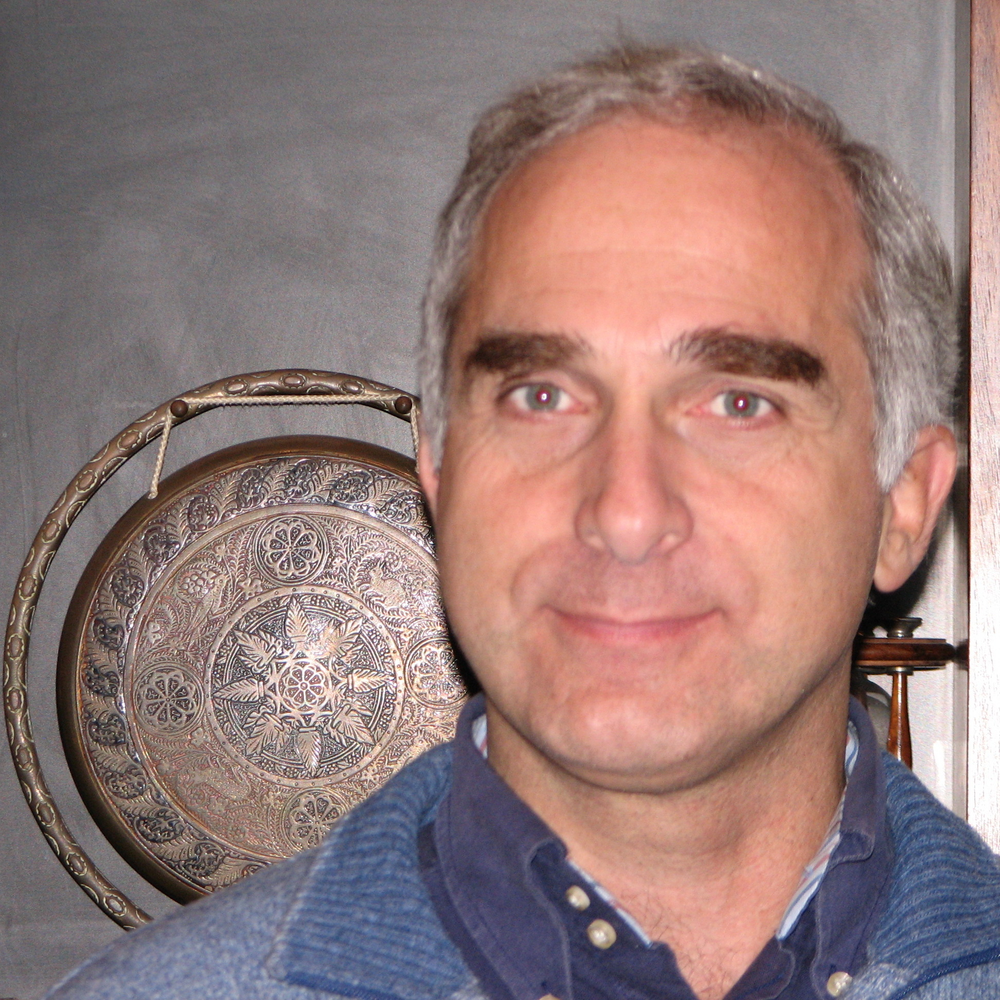

Paolo Luchini
Professor of Fluid Dynamics
Research interests
Flow stability, receptivity, transient growth and transition prediction in boundary layers;
turbulence, flow control and drag reduction methods;
numerical algorithms and programming;
optics, lasers and in particular the free-electron laser (FEL);
interfaces, surface instabilities and steady streaming;
the fluid dynamics of semipermeable membranes and their medical applications;
boundary-layer flows (natural convection, free-surface vortices, unsteady jets);
creeping flows (flexible-walled and partially obstructed ducts, Stokes flow in the viscous sublayer of drag-reducing riblets), with emphasis on exact or approximate analytical solutions (eigenfunction expansions, Wiener–Hopf solutions);
computational methods for the Navier–Stokes equations (adaptive grids, higher-order and compact finite differences, multigrid, conformal mappings, immersed boundary);
quadrature algorithms;
computer languages and compilers ( ).
).
Honours
- 2017: Doctor Honoris Causa of the
University of Toulouse.
Créé en 1918, le titre de Docteur Honoris Causa est une des plus prestigieuses distinctions décernées par les universités françaises pour honorer des personnalités de nationalité étrangère en raison de services éminents rendus aux sciences, aux lettres ou aux arts, à la France ou à l'université.
- 2016: Fellow of the European Mechanics Society (EUROMECH), with the mention
For his novel contributions to the understanding of receptivity, stability and control of shear flows, especially through the use of adjoint equations and for his leading role in the Italian mechanics community
. - 2009: Fellow of the American Physical Society (APS), with the mention
For the exploration of both electrodynamics and fluid dynamics with an interdisciplinary command of mathematical and numerical approaches and a balanced attention to basic physical issues and practical applicability
.
Service in scientific societies and journals
- 2014–2017: President of AIMETA, the Italian Association of Theoretical and Applied Mechanics,
- 2010–2021: on the Directive Council of AIMETA, the Italian Association of Theoretical and Applied Mechanics.
- 1999–2019: Associate Editor of the European Journal of Mechanics B/Fluids,
- 2019–: on the Advisory Board of EUROMECH, the European Mechanics Society,
Academic career
- 2022–: Professor Emeritus of the University of Salerno.
- 2000–2021: Professor (professore ordinario) of Fluid Dynamics at the University of Salerno, with responsibility of basic and advanced Fluid Mechanics classes for Mechanical Engineering students and of doctoral students.
- 1994–2000: Professor (professore ordinario) of Gasdynamics at Milan Polytechnic, with responsibility of Aerodynamics and Gasdynamics classes for Aerospace Engineering and of doctoral students.
- 1992–1994: Associate professor of Fluid Dynamics at the School of Engineering of the University of Naples.
- 1983–1992: Research assistant at the Institute of Gasdynamics of the School of Engineering of the University of Naples.
- 1981–1983: ATA fellow at the Electrotechnics Institute of the School of Engineering of the University of Naples.
Education
- 1980: Laurea in Electronics Engineering cum laude from the University of Naples, after a Summer internship at Bend Research Inc., Bend, Oregon, USA, having received top grades in all and honours in 23 out of 29 curricular examinations.
Affiliations
- Italian Association of Theoretical and Applied Mechanics (AIMETA),
- European Mechanical Society (EUROMECH),
- American Physical Society – Division of Fluid Dynamics (APS–DFD).
Past affiliations
- Italian Institute of Nuclear Physics (INFN),
- Italian Association of Aeronautics and Astronautics (AIDAA),
- American Institute of Aeronautics and Astronautics (AIAA).
Visiting appointments
- 2024: University guest (academic) for two months at the Department of Mechanical Engineering of the University of Melbourne, Australia.
- 2022: Participant for three months and Speaker at the INI – Isaac Newton institute for Mathematical Sciences in the Mathematical aspects of turbulence: where do we stand? programme.
- 2018: Sabbatical visiting scholar for three months at the Institut de Mécanique des Fluides de Toulouse and Université Paul Sabatier in Toulouse, France.
- 2017–2018: Sabbatical visiting scholar for five months at the Department of Mechanical and Aerospace Engineering of the University of California, San Diego, U.S.A.
- 1998–2015: Professeur invité, for approximately a month in each year, at the Institut National Politechnique and the Université Paul Sabatier in Toulouse, France.
- 2004, 2005, 2010, 2015: Visiting scholar, for approximately 1–2 months in each year, at the Department of Mechanical and Aerospace Engineering of the University of California, San Diego, U.S.A.
- 2006: Visiting scientist at the University of Western Ontario, Canada.
- 1995–97: ERCOFTAC Visitor, for about a month in each year, at the École Polytechnique Fèdèrale de Lausanne, Switzerland.
- 1984: Merrill Visiting Associate for one month of St. Catherine's College, Oxford, UK.
Organization of Conferences or Meetings
- 2017: European Drag Reduction and Flow Control Meeting EDRFCM-2017 (part of the ERCOFTAC SIG20 EDRFCM series), Monteporzio Catone, 3–6 April 2017.
- 2005: AIMETA minisymposium on "Separated Flows and Bluff Body Wakes".
- 2001: P. G. Berardi Memorial Workshop on Heat Transfer, Università di Salerno, 18 May 2001.
- 2000: 3rd ERCOFTAC SIG33 Workshop: New and Emerging Techniques for Transition Prediction, Ravello 27–-28 April.
- 1995: EUROMECH Colloquium 332 – Drag Reduction (9th European Drag Reduction Meeting), Ravello, 19–21 April.
Key scientific ideas
The introduction of the concept of effective mass as the relativistic extension of the effective potential acting on an electron immersed in a spatially inhomogeneous high-frequency wave (Phys. Letters 91A, 438-440, 1982).
The connection between a classical theorem relating the gain and spontaneous emission of a free-electron laser (FEL), and a more general property of the Brownian motion of a stochastic oscillator (J. Appl. Phys. 53, 5453-5458, 1982).
An exact solution for the relativistic motion of an electron in a tapered undulator (Appl. Phys. B37, 47–54, 1985).
A quantitative model of turbulent drag reduction by riblets based on the difference between the resistance opposed to the main flow and to crossflow fluctuations by the viscous sublayer of a turbulent stream (J. Fluid Mech. 228, 87–109, 1991).
A fast algorithm for the numerical computation of conformal mappings (J. Comp. Phys. 101, 368–374, 1992).
The CPL programming language and compiler (1993, published in 2020 at https://CPLcode.net and arXiv:2012.12143), which became the tool of choice for all subsequent numerical work.
A new quadrature formula for the numerical computation of integrals (Comp. Phys. Communications 83, 236–244, 1994).
A simple algebraic formula quantitatively relating turbulent drag reduction to the displacement of the logarithmic layer by riblets (7th European Drag Reduction Meeting, 1992 (Emerging Techniques in Drag Reduction, Mechanical Engineering Publications, 1996; Computational methods in applied sciences '96 (Paris, 9–13 September 1996)).
The observation that the mechanism of transient growth previously introduced to explain bypass transition in parallel flows can become a viscous algebraic instability when acting inside a boundary layer (J. Fluid Mech. 327, 101–115, 1996).
An approach to the receptivity of Görtler vortices based on the numerical solution of adjoint equations (J. Fluid Mech. 335, 1–21, 1998).
The quantitative description of optimal perturbations for the growth of streamwise vortices into velocity streaks in a boundary layer and of the near-independence of the generated velocity disturbance upon the shape of the exciting perturbation (J. Fluid Mech. 404, 289–309, 2000).
The development of a parallel-computing code for the direct numerical simulation of turbulence in rectangular and cylindrical geometry, and of its adjoint for turbulence-control studies (Eur. J. Mech. B/Fluids 21, 413–427, 2002; J. Comp. Phys. 211, 551–571, 2006).
The development of an active-feedback drag-reduction method based on the mean linear response of a fully turbulent flow to external forcing and on Wiener filtering (Phys. Fluids 18, 121702(1-4), 2006; 6th EUROMECH Fluid Mechanics Conference (EFMC6), Stockholm, 2006).
The study of eigenvalue sensitivity of global instabilities to structural perturbations through direct-adjoint computations and the identification of the maximum-sensitivity site with the wavemaker foreseen by previous authors' asymptotic analyses (J. Fluid Mech. 581, 167–197, 2007).
The revival and quantitative calculation of the role of microscopic thermal fluctuations in boundary-layer receptivity (arXiv:0804.2067, 2008; Seventh IUTAM Symposium on Unsteady Separated Flows and their Control, 11-18, 2010; AIAA J. 55 (1), 121–130, 2017).
Sensitivity of the limit cycle of a cylinder's wake to structural perturbations and respective role of the mean and oscillating components (AIAA paper 4227, 2008).
The proposal and verification of the activity of streamwise oscillations of spanwise velocity at the wall of a channel for turbulent drag reduction (Phys. Fluids 21, 115109, 2009).
A consistent formulation of the classical section-averaged equations of quasi-one-dimensional channel flow that resolves the ambiguity between momentum- and energy-based formulations (XIX Congresso Nazionale Aimeta, Ancona, 2009; J. Fluid Mech. 656, 337–341, 2010).
A comparison between eddy-viscosity models and direct numerical simulation through the response of turbulent flow to a volume force, showing that in important practical cases the flow rate predicted by eddy viscosity can be in the opposite direction to the actual one (XX Congresso AIMETA di Meccanica Teorica e Applicata, Bologna, 2011; J. Fluid Mech. 790, 104–127, 2016).
Riccati-less algorithms for the optimal control of fluid flow problems with no model reduction (Seventh IUTAM Symposium on Laminar-Turbulent Transition, 325–330, 2010; J. of Fluids and Structures 53, 15–25, 2015).
A quantitative appraisal of the error induced by linearized no-slip boundary conditions at a rough surface (e.g. in receptivity analysis) and of suitable correction coefficients that allow this error to be compensated. (J. Fluid Mech. 737, 349–367, 2013).
The discovery, through immersed-boundary simulations of turbulent flow past a sinusoidally undulated river bottom, of an unexpected resonance occurring at a wavelength much larger than the distance at which velocity correlations are generally expected to vanish (Eur. J. Mech. B/Fluids 55, 340–347, 2016)
A unifying formula for the mean turbulent velocity profile which allows a universal logarithmic law to be applied with equally universal coefficients to planar and pipe flows of different pressure gradients and boundary conditions (Phys. Rev. Letters 118 (22), 224501, 2017; Eur. J. Mech. B/Fluids 71, 15–34, 2018).
The identification of the opposite effect of pressure gradient on near-wall laminar and turbulent flow (arXiv:1811.11877, 2018).
A classification of the asymptotic regimes of laminar and turbulent perturbed flow over uneven terrain and the still unexplored features of its large-wavelength behaviour (J. Fluid Mech. 871, 534–-561, 2019).
Three unexpected properties of the turbulent boundary layer (arXiv:1709.00610, 2017; ICTAM 2020, Milano, 2021).
Book
P. Luchini, H. Motz: Undulators and Free-Electron Lasers, Clarendon at the Oxford University Press, 1990.
Complete list of publications
see the designated Google Scholar page.